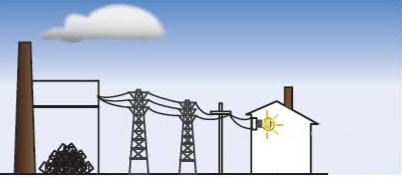

Eficiência da conversão
A eficiência da conversão luz/eletricidade de uma célula fotovoltaica é a proporção de energia de luz solar que a célula converte a energia elétrica.
Isto é muito importante quando discutivos dispositivos fotovoltaicos, porque melhorando esta eficiência podemos fazer com que estes dispositivos tornem-se mais competitivos com as demais fontes de energia.
Naturalmente , se um painel solar eficiente pode prover tanta energia quanto dois painéis menos eficientes, então o custo daquela energia será reduzido.
É óbvio que do outro lado desta equação está o dinheiro gasto para a fabricação.